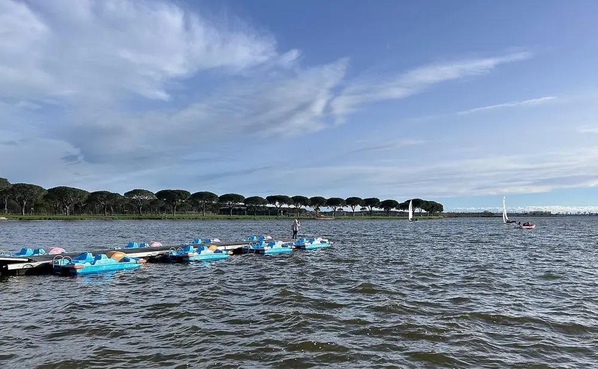

Ristorante · Pizzeria · Lido delle Nazioni
Barbablù
Ristorante e pizzeria sul Lungomare Italia 48. Per prenotare e per il menu del giorno basta una telefonata.
Orari: chiamate lo 0533 379016
La pizza, scorrendo
Una pizza
in cinque mosse
- 01Impasto La base, steso a mano.
- 02Pomodoro Il rosso… qui disegnato in blu.
- 03Mozzarella Bianca come la sabbia del lido.
- 04Basilico Quattro foglie, per fortuna.
- 05Pronta Le pizze del giorno? Chiamate lo 0533 379016.
Illustrazione, non una foto del locale. Chiamate lo 0533 379016 per il menu e le pizze del giorno.

Il lido
Sul lungomare
Ristorante Pizzeria Barbablù si trova in Via Lungomare Italia 48, a Lido delle Nazioni, uno dei Lidi di Comacchio in provincia di Ferrara.
Per prenotare un tavolo o chiedere il menu: telefono 0533 379016, cellulare 339 725 5779, oppure una mail a info@ristorantebarbablu.it.
A tavola
sul lungomare
Telefono0533 379016Cellulare339 725 5779E-mailinfo@ristorantebarbablu.itDove · indicazioniVia Lungomare Italia 48, 44020 Lido delle Nazioni (FE)
OrariChiamate lo 0533 379016 per gli orari aggiornati